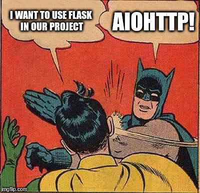
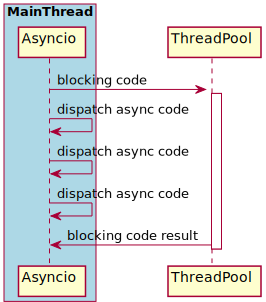
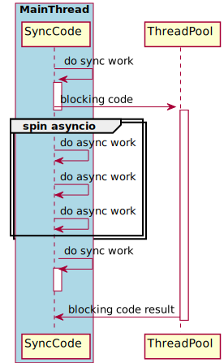
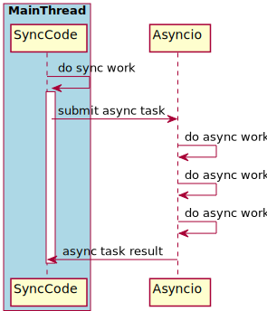

Building Apps With Asyncio
Nikolay Novik
http://github.com/jettifyPyConUA 2016
I am ...
- Software Engineer: at DataRobot Ukraine
- Github: https://github.com/jettify
- Twitter: https://twitter.com/isinf
- My Projects:
- database clients:
aiomysql, aioobc, aiogibson - web and etc:
aiohttp_debugtoolbar, aiobotocore, aiohttp_mako, aiohttp_admin
- database clients:
Poll: you and asyncio
- I am using asyncio/aiohttp extensively
- I am using Twisted, Tornado, gevent etc. extensively
- I think async programming is kinda cool
Agenda
- Motivation, why asyncio and asynchronous programming
- Asyncio application design choices
- Tips and tricks and things to consider in your app
- Asyncio pitfalls
Motivation. Why you might want to write asynchronous code?
- Bunch of shiny new frameworks
- Idle protocols (websockets) work out of box
- One can do useful work instead of blocking
- Encourage good development practices
Also we do SOA (microservices) this days...

SOA implies a lot of network communications.
Sync does not scale (TM)
from django.http import HttpResponse
def my_view(request):
# blocks thread
r = requests.get('http://graph.facebook.com/v2.5/{uid}')
data = r.json()
# ...
return HttpResponse(status=200)
# --------------------------------------
from aiohttp import web
async def my_view(request):
session = request.app['session']
# context switch here
r = await session.get('http://graph.facebook.com/v2.5/{uid}')
data = await r.json()
return web.Response(status=200)
Asyncio application design choices
- Event loop are spins in main thread, it schedules blocking tasks using thread pool.
- Embedded event loop, main thread gives control to the event loop for finite amount of time, and then executes regular sync code.
- Sync code executed in main thread, but event loop spinning in separate thread.
Asyncio is in main thread
Most popular and convenient asyncio mode in the wild.
Asyncio is in main thread. Blocking calls are in ThreadPool
import asyncio
from pyodbc import connect
loop = asyncio.get_event_loop()
executor = ThreadPoolExecutor(max_workers=4)
async def test_example():
dsn = 'Driver=SQLite;Database=sqlite.db'
conn = await loop.run_in_executor(executor, connect, dsn)
cursor = await loop.run_in_executor(executor, conn.cursor)
conn = await loop.run_in_executor(executor, cursor.execute,
'SELECT 42;')
loop.run_until_complete(test_example())
ThreadPool Notes
- No way to kill thread if task stuck inside
- C extensions could consumer alot of virtual memory due to thread arena
- Convenient workaround for blocking calls
Asyncio is in main thread. Blocking code in ProcessPool
loop = asyncio.get_event_loop()
executor = ProcessPoolExecutor(max_workers=3)
def is_prime(n):
if n % 2 == 0: return False
sqrt_n = int(math.floor(math.sqrt(n)))
for i in range(3, sqrt_n + 1, 2): if n % i == 0: return False
return True
async def go():
result = await loop.run_in_executor(
executor, is_prime, 112272535095293)
loop.run_until_complete(go(loop, executor))
ProcessPoolExecutor has same interface as
ThreadPoolExecutor
ProcessPool Notes
- Easy to terminate
- Consumes a lot of memory
- Process should be created and warmed as soon as
possible in order not to copy memory due to
fork()
Embedded Asyncio loop
Application may spin event loop on will to perform IO heavy computations.
Embedded Asyncio loop. Example
import asyncio, aiohttp
async def fetch(session, url, loop):
async with session.get(url) as resp:
data = await resp.text()
def collect_data(url_list):
loop = asyncio.get_event_loop()
session = aiohttp.ClientSession(loop=loop)
coros = [fetch(sessiong, u, loop) for u in url_list]
data = loop.run_until_complete(asyncio.gather(*coros, loop=loop))
loop.run_until_complete(session.close())
loop.close()
return data
def main():
url_list = db.fetch_urls()
data = collect_data(url_list)
process(data)
Do not try this at home!
from flask import Flask
app = Flask(__name__)
loop = asyncio.get_event_loop()
redis = loop.run_until_complete(aioredis.create_redis(
('localhost', 6379), loop=loop))
@app.route("/")
def hello():
value = loop.run_until_complete(redis.get('my-key'))
return "Hello {}!".format(value)
if __name__ == "__main__":
app.run()
Asyncio loop has own separate thread
Application may delegate IO heavy tasks for dedicated loop in separate thread.
Asyncio loop has own separate thread. Example
import asyncio, functools
from threading import Thread, Event
class AioThread(Thread):
def __init__(self, *args, **kwargs):
super().__init__(*args, **kwargs)
self.loop = None
self.event = Event()
def run(self):
self._loop = asyncio.new_event_loop()
asyncio.set_event_loop(self._loop)
self._loop.call_soon(self.event.set)
self._loop.run_forever()
def add_task(self, coro):
fut = asyncio.call_soon_threadsafe(coro, loop=self._loop)
return fut
def finalize(self, timeout=None):
self._loop.call_soon_threadsafe(self._loop.stop)
self.join(timeout=timeout)
Fetch results from event loop
def main()
aiothread = AioThread()
aiothread.start()
aiothread.event.wait()
loop = aiothread.loop
coro = asyncio.sleep(1, loop=loop)
future = aiothread.add_task(coro)
try:
result = future.result(timeout)
except asyncio.TimeoutError:
print('The coroutine took too long, cancelling the task...')
future.cancel()
except Exception as exc:
print('The coroutine raised an exception: {!r}'.format(exc))
else:
print('The coroutine returned: {!r}'.format(result))
Real world example: Cassandra python driver
class TwistedConnection(Connection):
@classmethod
def initialize_reactor(cls):
cls._loop = TwistedLoop()
def add_connection(self):
# ...
def client_connection_made(self):
# ...
def handle_read(self):
self.process_io_buffer()
def push(self, data):
reactor.callFromThread(self.connector.transport.write, data)
Advanced sync/async communication. Janus queue
queue = janus.Queue(loop=loop)
await queue.async_q.get()
queue.sync_q.put(i)
Janus queue example
import asyncio, janus
loop = asyncio.get_event_loop()
queue = janus.Queue(loop=loop)
def threaded(sync_q):
for i in range(100):
sync_q.put(i)
sync_q.join()
async def async_coro(async_q):
for i in range(100):
val = await async_q.get()
async_q.task_done()
fut = loop.run_in_executor(None, threaded, queue.sync_q)
loop.run_until_complete(async_coro(queue.async_q))
loop.run_until_complete(fut)
janus has two APIs for same queue: sync like
queue.Queue and async like asyncio.Queue
Asyncio tips and tricks
TIP: Use Explicit Event Loop
import asyncio
async def go(loop):
future = asyncio.Future(loop=loop)
future.set_result(None)
await asyncio.sleep(3.0, loop=loop)
await future
print("foo")
loop = asyncio.get_event_loop()
loop.run_until_complete(go(loop))
loop.close()
loop argument is required for most asyncio APIs.
Glyph on global event loop
https://groups.google.com/forum/#!msg/python-tulip/hr1kPZfMX8U/9uqdlbRuRsoJIt would really be a pity if Tulip repeated our billion-dollar mistake [global reactor] ;-)
Convenience of explicit loop
- Increase of testability (Hello Twisted!)
- Fast access to bunch of useful methods:
run_in_executor, create_subprocess_exec, create_task - Easier to reason about code when you have nonstandard case like: two threads two event loops, or main thread is sync second is async
TIP: Think about graceful shutdown early
Asyncio graceful shutdown
import asyncio, signal
is_working = True
async def do_work(loop):
while is_working:
await asyncio.sleep(1, loop=loop)
def signal_handler(loop):
loop.remove_signal_handler(signal.SIGTERM)
is_working = False
loop = asyncio.get_event_loop()
loop.add_signal_handler(signal.SIGTERM, signal_handler, loop)
loop.run_until_complete(do_work(loop))
asyncio will warn you with bunch of tracebacks
if you do not do proper shutdown.
Graceful shutdown aiohttp edition
loop = asyncio.get_event_loop()
handler = app.make_handler()
f = loop.create_server(handler, '0.0.0.0', 8080)
srv = loop.run_until_complete(f)
def shutdown(loop)
loop.remove_signal_handler(signal.SIGTERM)
loop.stop()
loop.add_signal_handler(signal.SIGTERM, shutdown, loop)
loop.run_forever()
srv.close() # finish socket listening
loop.run_until_complete(srv.wait_closed())
loop.run_until_complete(app.shutdown()) # close websockets
loop.run_until_complete(handler.finish_connections(60.0))
loop.run_until_complete(app.cleanup()) # doc registered cleanups
loop.close()
TIP: Think About Resource Lifetime to Avoid Resource (Socketes) Leak
Good candidates for extra care:- Any rest calls to external services
- Any reconnection logic
Make sure all responses has been released
aiohttp.ClientSession is your friend
import asyncio
import aiohttp
async def go(loop):
session = aiohttp.ClientSession(loop=loop)
async with session.get('http://ua.pycon.org') as resp:
data = await resp.text()
print(data)
session.close()
loop = asyncio.get_event_loop()
loop.run_until_complete(go(loop))
Be a good citizen! Shutdown db connection pools in your aiohttp app
async def init(loop):
# setup application and extensions
app = web.Application(loop=loop)
# create connection to the database
pg = await init_postgres(conf['postgres'], loop)
async def close_pg(app):
pg.close()
await pg.wait_closed()
app.on_cleanup.append(close_pg)
# ...
aiohttp has handy signal on_cleanup for
database connections, as well as on_shutdown for
websockets
Explicitly finalize background tasks
class Foo:
def __init__(self):
self._task = asyncio.create_task(self._do_task(),
loop=self._loop)
async def _do_task():
await self.set('foo', 'bar')
await self.set('baz', 'zap')
async def _stop_do_task(self):
await self._task
task.cancel()Asyncio Pitsfalls

Keep an eye on StopIteration in python 3.4
@asyncio.coroutine
def coro():
raise StopIteration('batman')
@asyncio.coroutine
def coro2():
i = iter(range(2))
next(i)
next(i)
next(i) # raise StopIteration
return 'finish'
@asyncio.coroutine
def go():
data = yield from coro() # batman
data = yield from coro2() # None
Missed coroutine decorators in python 3.4
@asyncio.coroutine
def foo(loop):
yield from asyncio.sleep(1, loop=loop)
def bar(loop):
yield from asyncio.sleep(1, loop=loop)
loop.run_until_complete(foo(loop))
loop.run_until_complete(bar(loop))
Fixed in python 3.5 with await syntax
@asyncio.coroutine
def foo(loop):
yield from asyncio.sleep(1, loop=loop)
def bar(loop):
yield from asyncio.sleep(1, loop=loop)
loop.run_until_complete(foo(loop))
loop.run_until_complete(bar(loop))
Think 7 times before using task.cancel()
async def foo(loop):
await update1()
await update2()
task = loop.ensure_future(foo(loop))
task.cancel()